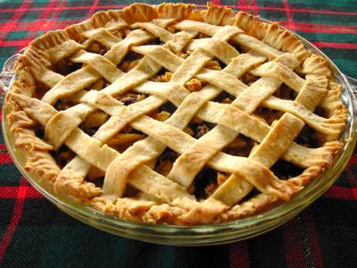

This is a website about pie. Pie is a delicious dessert that can be eaten for special occasions or just breakfast sometimes.
Pie is so tasty and I love it. Once I didn't have pie and it was the saddest day of my life except for, you know, the one with the play. Four score and seven years ago I had some pie and I was really happy about it. In closing, pie is very important. - Abraham Lincoln